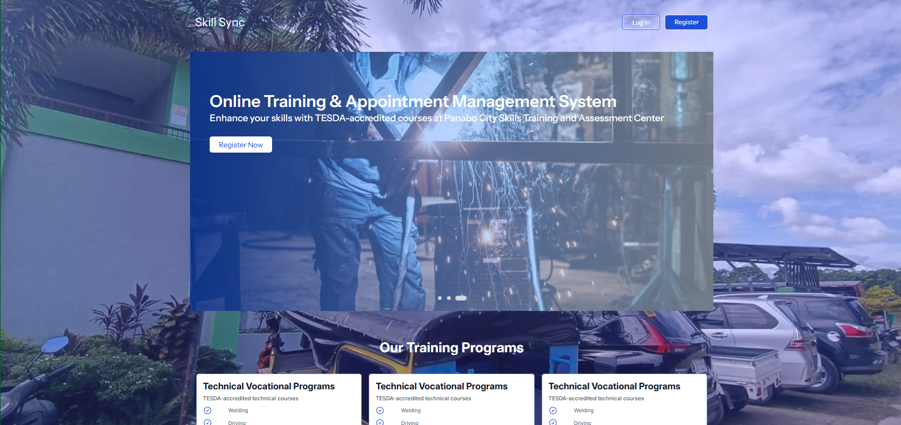
SkillSync - Capstone System
A web-based platform designed to register, submit requirements, and employment opportunities by mapping competencies to industry requirements.
Technologies: Laravel, React, MySQL
Bachelor of Science in Information Systems
A graduating Information Systems student passionate about bridging business needs with modern technology solutions through systems analysis, web development, and data-driven decision making.
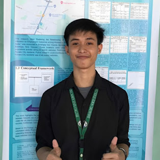
Aspiring Systems Analyst & Data Encoder
A quick overview of my journey as a BSIS student.
I am experienced in handling multiple roles within a project environment, including serving as a documentarian, project manager, and encoder. As a documentarian, I ensure accurate and well-organized preparation of project reports, technical documents, and records that support clear communication and proper documentation of all processes. In my role as a project manager, I coordinate tasks, monitor progress, and guide the team to ensure that project goals are achieved efficiently and within deadlines while maintaining quality standards. As an encoder, I handle data entry and information management with accuracy and attention to detail, ensuring that all records are properly encoded, organized, and maintained for reliable use throughout the project lifecycle.
I enjoy working at the intersection of people, processes, and technology—analyzing requirements, designing intuitive user experiences, and implementing efficient, scalable solutions.
Technical and soft skills I've developed throughout my BSIS journey.
Selected academic and personal projects that showcase my skills.

A web-based platform designed to register, submit requirements, and employment opportunities by mapping competencies to industry requirements.
Technologies: Laravel, React, MySQL
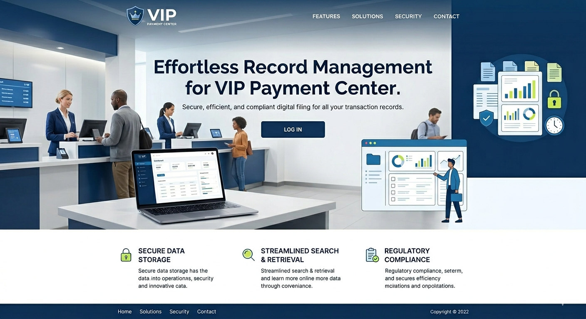
A locally hosted web-application information system for managing records for payment with analytical dashboards and downloadable report.
Technologies: MySQL, HTML, CSS, JavaScript, Django
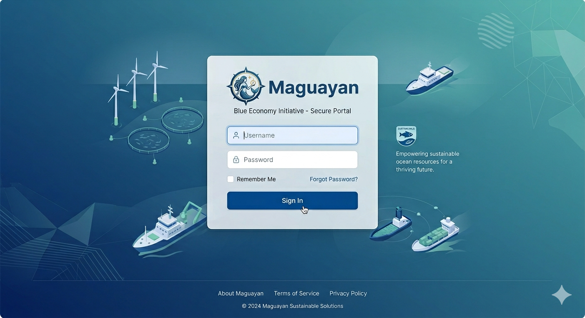
My first web project in Blue Economy-focused Schedule and Resource Management System designed to streamline fish harvesting schedules, optimize resource allocation, and efficiently manage fisheries inventory for sustainable and productive operations.
Technologies: PHP, MYSQL, HTML, CSS, Javascript
Recognitions and certifications earned during my academic journey.
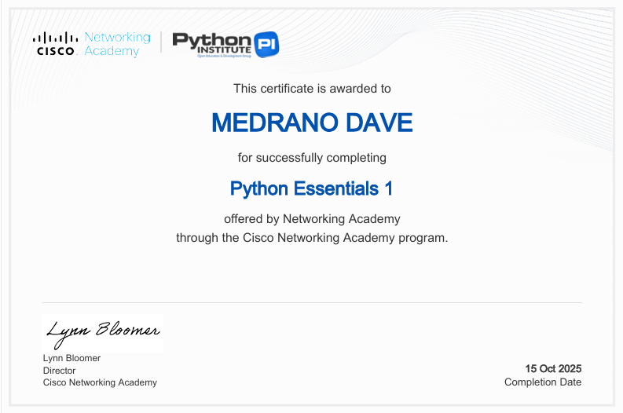
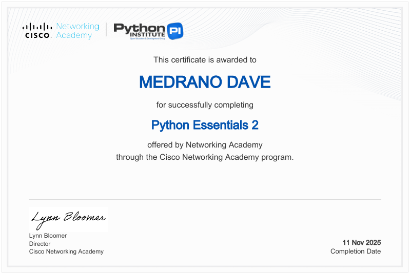
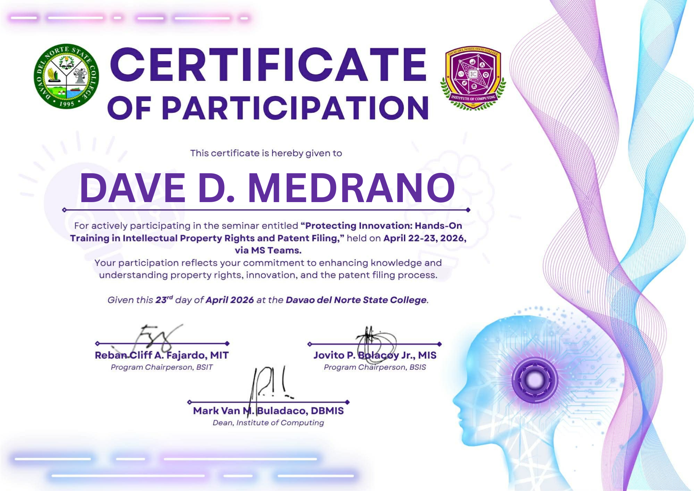
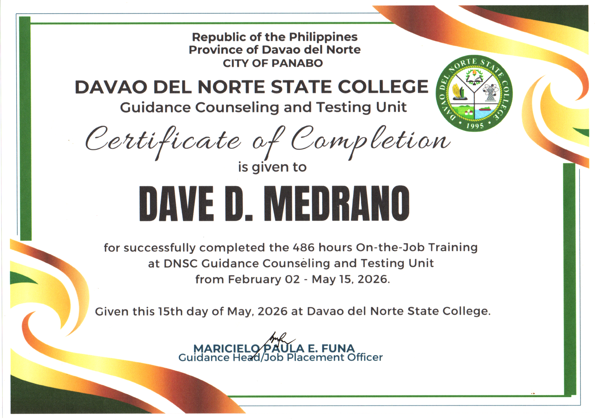
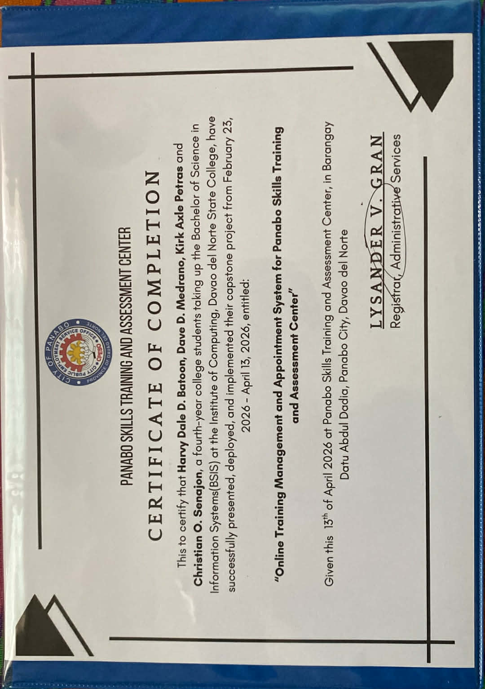
Hands-on experience gained through on-the-job training.
My internship experience at the DNSC Guidance Office was a meaningful and enriching journey that allowed me to develop both my professional and personal skills.
Throughout my training, I was given the opportunity to perform various administrative and office-related tasks such as encoding student information, preparing documents, assisting during examinations, creating informational materials, and supporting different office programs and activities.
These responsibilities helped me improve my organizational, communication, and technical skills while gaining a better understanding of how a guidance office operates in serving students and stakeholders.
This experience also taught me the importance of professionalism, responsibility, teamwork, and adaptability in the workplace. By working closely with the guidance personnel, I learned how dedication and efficiency contribute to providing quality services to students. The internship enhanced my confidence, strengthened my work ethic, and allowed me to apply the knowledge and skills I acquired from my academic studies in a real-world setting. I am grateful to the DNSC Guidance Office for the guidance, support, and valuable learning opportunities that have contributed to my growth and preparation for my future career.
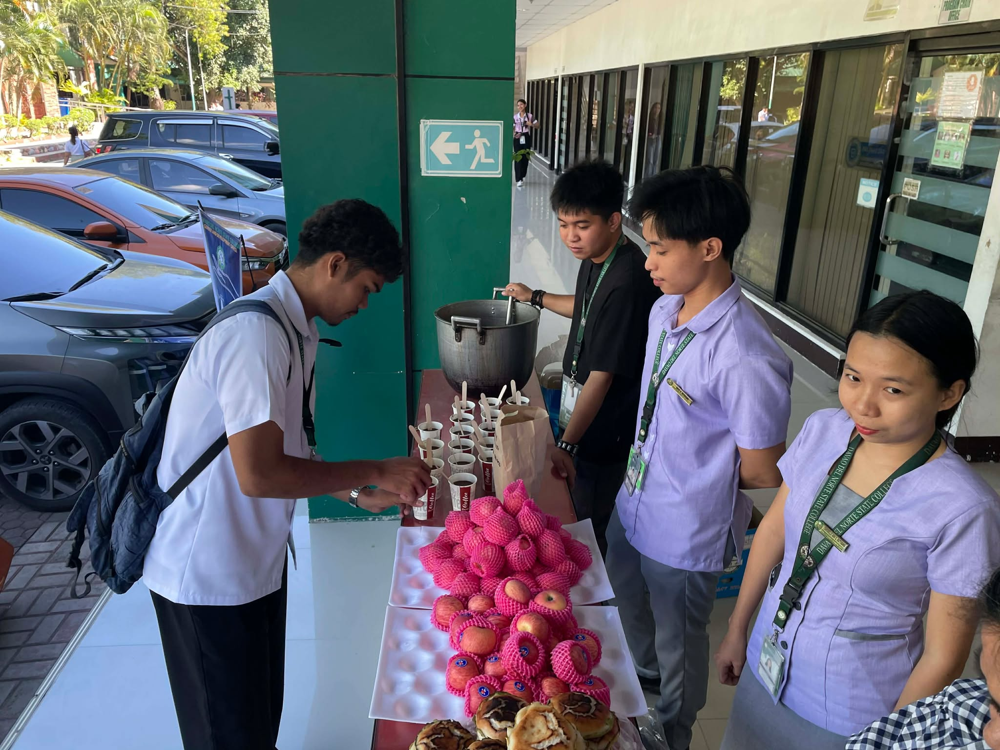
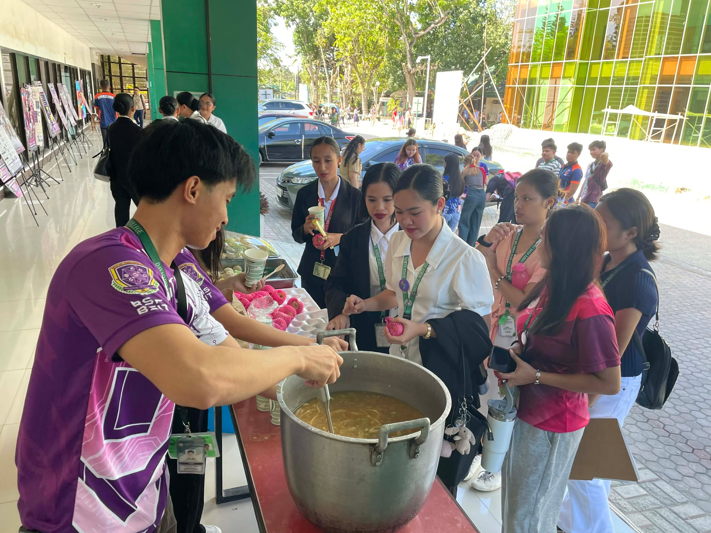
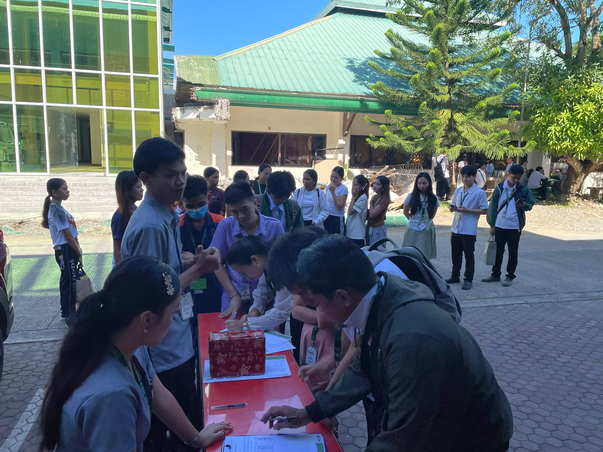
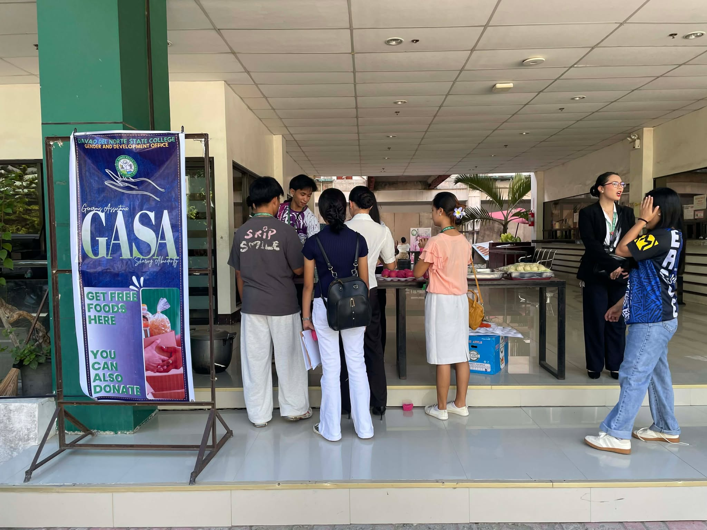
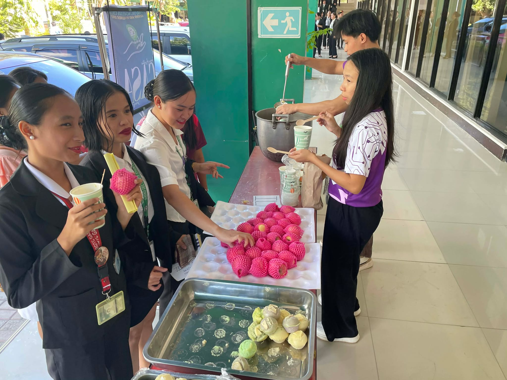
Interested in working together or learning more? Let's connect.
I’m currently seeking entry-level positions and collaborative projects in information systems, web development, and IT solutions.